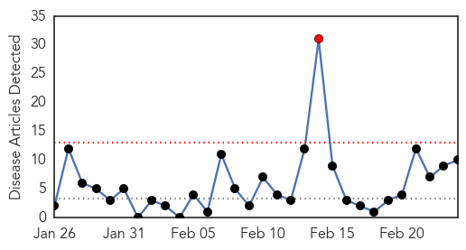
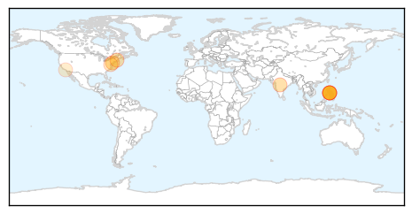
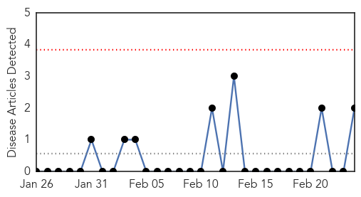
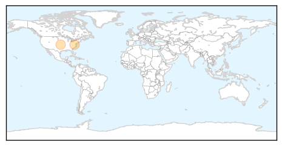

Measles
30-Day Web Trend
1 alerts, 0 warnings

30-Day Twitter Trend
0 alerts, 0 warnings

Article Locations
Article Confidences
Top Articles:
- 0.992
- Health alert in Framingham issued over measles cases
- 0.980
- How worried should we be about a new ‘polio-like’ virus?
- 0.973
- Polio-like syndrome paralyses California kids
- 0.965
- Fears measles epidemic spreading
- 0.956
- Flu deaths increase to 278 across California
- 0.911
- School fights to curb measles cases
- 0.870
- Bunbury families urged to safe-guard against measles outbreak
- 0.835
- Measles outbreak at Auckland High School
- 0.775
- WA measles increase blamed on travel to the Philippines
- 0.585
- Even affluent families skipping vaccination
Top Tweets:
-
No tweets found for Feb 24, 2014
Ebola
30-Day Web Trend
0 alerts, 0 warnings

30-Day Twitter Trend
0 alerts, 0 warnings

Article Locations
Article Confidences

Top Articles:
Top Tweets:
-
No tweets found for Feb 24, 2014